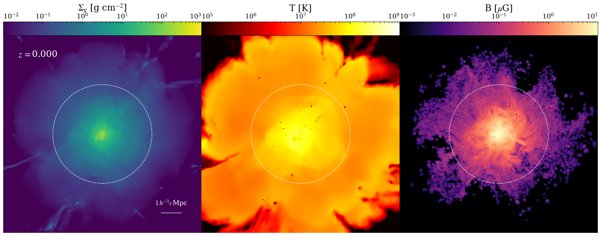

Propaganda Plot
I like to make paneled imshow plots. This is a bit of a pain to do every time, so I tried to introduce a kind of Swiss Army Knife plotting function for streamlining this. You can find an example of this e.g. in Steinwandel, Böss, et al (2021).

PyPlotUtility.propaganda_plot_columns — Functionpropaganda_plot_columns(Nrows, Ncols, files, im_cmap, cb_labels, vmin_arr, vmax_arr, plot_name;
map_arr = nothing, par_arr = nothing,
contour_arr = nothing, contour_par_arr = nothing,
log_map = trues(Ncols),
colorbar_bottom = false,
colorbar_single = false,
smooth_col = falses(Ncols),
smooth_size = 0.0,
streamline_files = nothing,
streamlines = falses(Ncols),
contour_files = nothing,
contours = falses(Ncols),
contour_levels = nothing,
contour_color = "white",
smooth_contour_col = falses(Ncols),
alpha_contours = ones(Ncols),
cutoffs = nothing,
mask_bad = trues(Ncols),
bad_colors = ["k" for _ = 1:Ncols],
annotate_time = falses(Nrows * Ncols),
time_labels = nothing,
annotate_text = falses(Nrows * Ncols),
text_labels = nothing,
annotate_scale = trues(Nrows * Ncols),
annotation_color = "w",
scale_label = L"1 \: h^{-1} c" * "Mpc",
scale_kpc = 1000.0,
r_circles = [0.0, 0.0],
shift_colorbar_labels_inward = trues(Ncols),
upscale = Ncols + 0.5,
read_mode = 1,
image_num = ones(Int64, Ncols),
transparent = false,
ticks_color = "k"
)Creates an image_grid plot with Ncols and Nrows with colorbars on top.